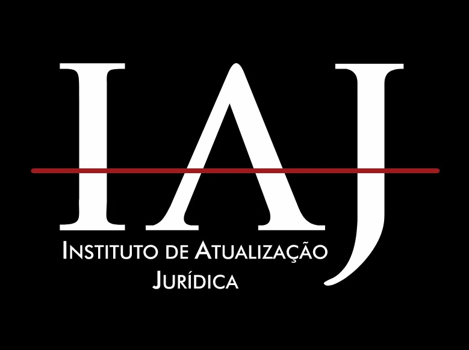
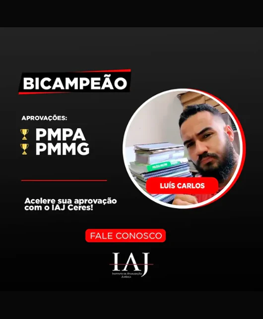
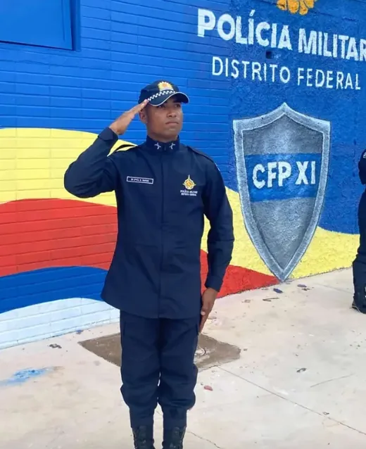
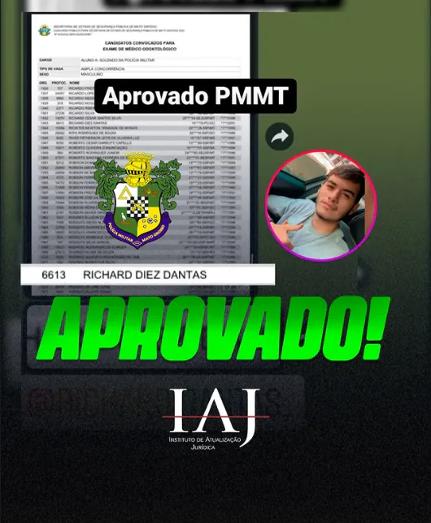

Advocacia
Conheça as áreas de atuação e as informações para atendimento no escritório em Ceres – GO.
Conhecer a atuação jurídicaAtendimento jurídico em Ceres, Goiás
Advogado em Ceres – GO
OAB/GO 41.071 • Ceres, Goiás
Atuação jurídica ampla em Ceres e região: família, inventário, consumidor, questões bancárias, imóveis, agrário, ambiental e outras áreas do Direito. Escritório físico em Ceres – GO, com análise individual de cada demanda.
Presença institucional
José Carlos Cardoso Ribeiro é advogado inscrito na OAB/GO 41.071, professor universitário e autor de obra de Processo Penal. Seu escritório está localizado na Avenida Presidente Vargas, 64, Centro, em Ceres – GO.
Duas frentes de atuação
Conheça as áreas de atuação e as informações para atendimento no escritório em Ceres – GO.
Conhecer a atuação jurídicaProjeto educacional ligado ao ensino jurídico, à atualização profissional e à preparação para novos desafios.
Conhecer o institutoBiografia
Dr. José Carlos Cardoso Ribeiro reúne experiência na advocacia, na sala de aula, na produção de conteúdo jurídico e no desenvolvimento do IAJ - Instituto de Atualização Jurídica.
Sua trajetória combina formação acadêmica, atuação profissional e comunicação educacional, com foco em Direito Penal, Processo Penal, Legislação Penal Especial e preparação jurídica para carreiras públicas.
Ver vídeo biográfico no InstagramGraduado em Direito pela Unifan - Universidade Alfredo Nasser, em Goiás, e em Teologia pela EETAD. Pós-graduado em Direito Tributário pela Universidade Anhanguera.
Mestrando em Sociedade, Tecnologia e Meio Ambiente pela Faculdade UniEvangélica de Anápolis-GO.
Advogado inscrito na OAB/GO sob o nº 41.071, com atuação ampla nas áreas do Direito, exceto Trabalhista e Previdenciário.
Professor convidado da RedeJuris e professor titular do curso de Direito da Faculdade Evangélica de Rubiataba.
Desde 2013, dedica-se à gravação de videoaulas de Direito Penal, Processo Penal e Legislação Penal Especial para cursos online.
Autor do livro Manual de Processo Penal para Carreiras Policiais, publicado pela Editora Impetus em 2015.
Também registra participação em iniciativas de comunicação pública e experiência eleitoral, incluindo candidaturas nos anos de 2020, 2022 e 2024.
A experiência na advocacia, na docência e na produção de conteúdo converge para o IAJ, projeto voltado à atualização jurídica e à preparação de alunos para novos desafios profissionais.
Advocacia
Cada situação deve ser examinada individualmente, considerando fatos, documentos e legislação aplicável.
Conteúdo exclusivamente informativo. Não constitui consulta jurídica, promessa de resultado ou garantia de contratação.
Informações sobre atendimentoCada demanda deve ser compreendida a partir de seus fatos, documentos e contexto.
O atendimento jurídico exige linguagem compreensível, técnica e responsável.
A área jurídica mantém caráter informativo, sóbrio e compatível com a dignidade da advocacia.

IAJ
O IAJ é apresentado como projeto educacional fundado e conduzido pelo Dr. José Carlos Cardoso Ribeiro, voltado à transmissão de conhecimento jurídico, cursos, preparatórios e atualização profissional.

Consulte o Instituto de Atualização Jurídica para conhecer as opções de formação, os conteúdos, as modalidades e as próximas turmas. As condições e a disponibilidade são informadas pelo canal oficial do IAJ.
Alunos aprovados
Resultados que fazem parte da trajetória do Instituto, desde a primeira turma até aprovações recentes em concursos públicos.
Matheus Alves, de Itapaci-GO, integrou a primeira turma do IAJ, iniciada em outubro de 2016 para o concurso da Polícia Militar do Estado de Goiás realizado em janeiro de 2017.
Essa aprovação marcou o início da trajetória de resultados do Instituto de Atualização Jurídica.

PMPA e PMMG
Luís Carlos, de Nova Glória-GO. Hoje policial militar no Pará.
PMDF
Douglas Rafael, de Rianápolis-GO. Aprovado no último concurso da Polícia Militar do Distrito Federal.
PMMT
Richard Diez Dantas, de Itapaci-GO.CBMGO
Leonardo, de Ceres-GO. Soldado do Corpo de Bombeiro Militar do Estado de Goiás, atuando em Ceres-GO.Matrícula
Consulte o canal oficial do Instituto para informações sobre cursos, conteúdo programático, inscrições e próximas turmas.
Professor e fundador
A trajetória do Dr. José Carlos conecta advocacia, docência, produção de conteúdo jurídico e formação de alunos, fortalecendo a proposta educacional do IAJ.
Conteúdos
Acompanhe os conteúdos jurídicos, as videoaulas e as publicações nos canais oficiais do Dr. José Carlos e do IAJ.
Perfil público com conteúdos jurídicos, educacionais e institucionais.
Acompanhar perfilCanal oficial para publicações relacionadas ao instituto e seus conteúdos.
Acompanhar IAJVideoaulas, conteúdos jurídicos e publicações educacionais no canal oficial do Instituto.
Visitar canalPerguntas frequentes
Respostas objetivas para separar atendimento jurídico, IAJ e conteúdos educacionais.
O escritório está localizado na Avenida Presidente Vargas, 64, Centro, Ceres – GO, CEP 76300-000. O telefone e WhatsApp para informações é (62) 98209-1217.
O Dr. José Carlos tem atuação ampla nas áreas do Direito, exceto Trabalhista e Previdenciário. As páginas do site apresentam informações sobre família, inventário, consumidor e bancário, imobiliário e agrário, ambiental, cível, criminal, empresarial, tributário e demandas com o poder público. O assunto é examinado individualmente para definir o atendimento adequado.
Não. A atuação do Dr. José Carlos não abrange Direito Trabalhista nem Direito Previdenciário.
Sim. O escritório físico fica em Ceres, na Avenida Presidente Vargas, 64, Centro, e recebe demandas de Ceres e região. Consulte o contato profissional para informações sobre agendamento e forma de atendimento.
Organize uma breve sequência dos fatos e os documentos relacionados ao assunto. Se houver processo ou comunicação oficial, tenha em mãos o número e as datas de recebimento. Solicite orientações sobre o envio de documentos pelo canal de atendimento.
Não. O site possui caráter institucional e direciona para os canais oficiais do IAJ.
Consulte a área de cursos do IAJ ou use o botão comercial de WhatsApp para verificar opções atuais, valores e novas turmas.
A disponibilidade depende de cada curso e turma. Entre em contato com o IAJ para verificar as opções atuais e as próximas turmas.
Consulte o Instituto para verificar as datas de início e a disponibilidade da turma de seu interesse.
As condições dos cursos são informadas diretamente pelo canal oficial de atendimento do IAJ.
Solicite informações pelo canal oficial do IAJ para conhecer os procedimentos de inscrição no curso de seu interesse.
Acesse a área de advocacia e utilize o botão específico de contato pelo WhatsApp.
Não. O contato inicial não representa automaticamente aceitação da demanda ou relação advogado-cliente.
Não. Os conteúdos possuem finalidade exclusivamente informativa.
Contato
Ver localização no Google Maps
Entre em contato para obter informações sobre a forma de atendimento.
Contato sobre advocaciaEntre em contato para obter informações sobre cursos, conteúdos e atividades do IAJ.
Contato sobre o IAJ